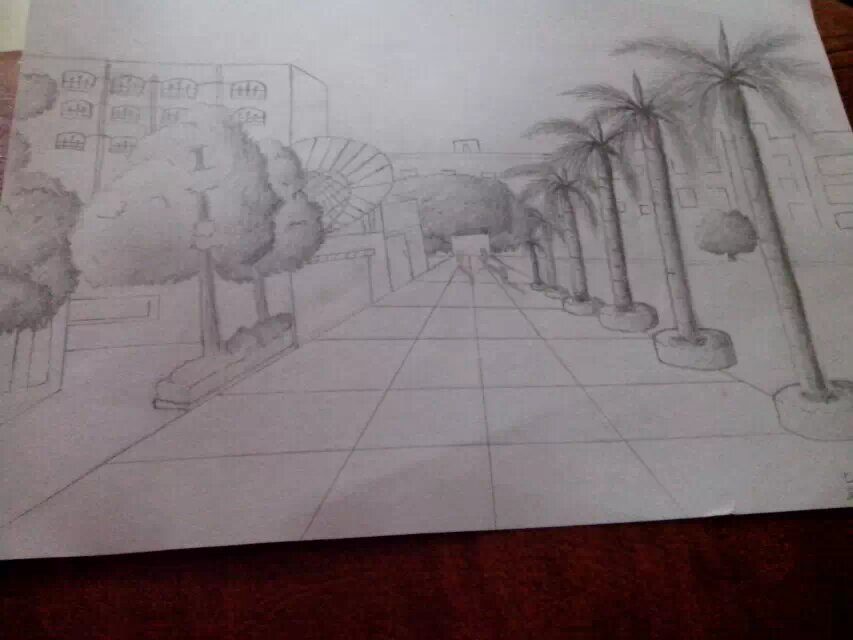
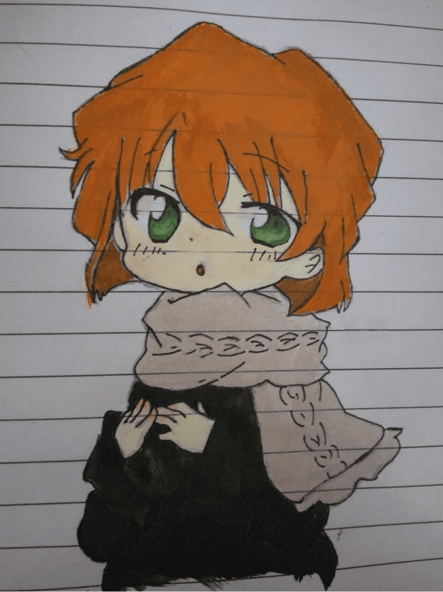
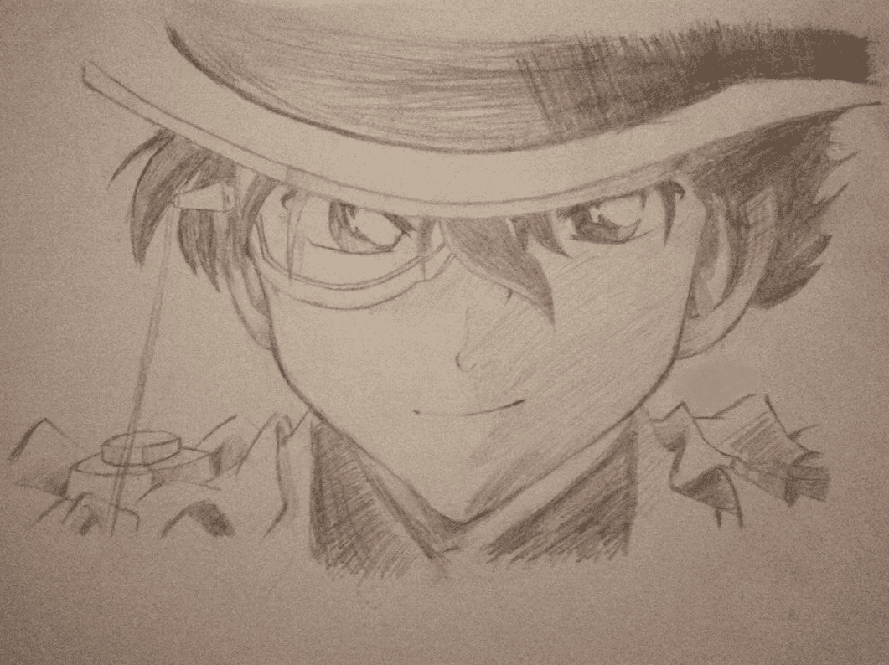

[2014]
This was my first assignment in my sketching class at school.
My teacher said it was pretty good and pinned it up on the display wall.
I'm very proud of it. It's kind of blurry, mobile phone did not take
pictures clearly at that time.
Welcome to 2016!

[2016]
I loved watch Detective Conan when I was little,
Haibara Ai is my favourite character. P.S, it's not original.

[2016]
His name is KID, an awesome magician. It's not original either.
When I was little, I always drew after other people's work.
Now I don't do it anymore.
But sometimes I'm still impressed with my previous "copyed work".